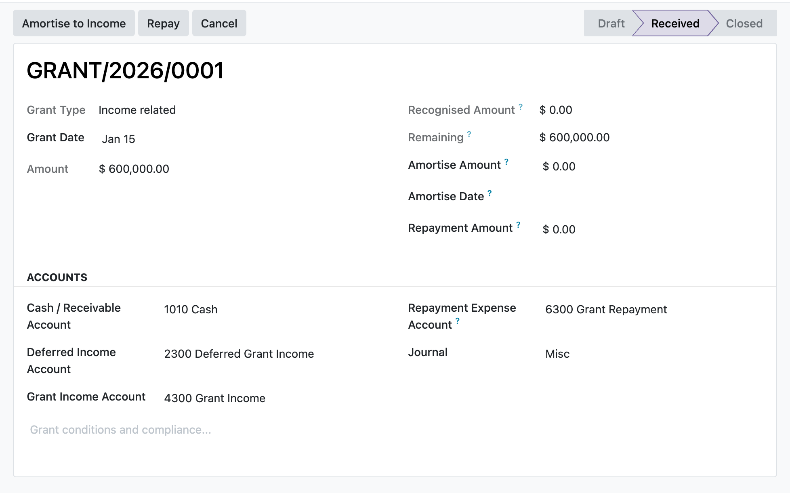

Recognise government grants on receipt and release them to income over the periods that match the related costs, with income-related, deferred-income and deduction-from-asset presentations, prospective repayment, and posting locked to your accounting manager.
Each amortisation release posts on its own accounting date so grant income lands in the period whose costs it matches (IAS 20.12), not bunched into the period the grant was received.
An asset-related grant can be shown as deferred income released over time, or netted against the asset's carrying amount on receipt so it flows through reduced depreciation (IAS 20.24 to 27). You pick the basis per grant.
Once a grant is received its amount, accounts and basis freeze, posting actions are limited to the EH Accounting Manager group, entries are sealed, and a grant carrying posted moves cannot be deleted.
You raise a grant, set it asset-related on the deferred-income basis, enter the amount, cash, deferred-income and grant-income accounts and a general journal, then press Receive. The receipt posts cash against deferred income. Each period you enter the amount and date to release and press Amortise to Income; the entry posts on that earning date and the recognised and remaining figures update. When the deferred balance reaches zero the grant closes on its own. If the grant later becomes repayable, Repay reverses what is left in deferred income and charges any shortfall to expense.
In the shipped code today, each one a place where a cheaper module silently does the wrong thing.
A deduction-from-asset grant is recognised in full through the reduced asset carrying amount on receipt, so it moves straight to Closed and the Amortise and Repay actions refuse it with a clear IAS 20.27 explanation rather than posting a meaningless entry.
Releasing more than the remaining deferred income is refused with the exact shortfall, so recognised grant income can never exceed the amount ever credited.
A repayment first reverses unamortised deferred income and only charges the surplus to a repayment expense account; if that account is missing when a surplus exists, the action names the exact excess and stops.
Amount, dates, accounts, journal and basis freeze once state leaves draft, and recognised_amount can only move under the sanctioned amortise flag, so a raw write cannot re-base a posted grant.
Resetting a posted grant back toward draft is manager-gated, and a grant carrying a posted move cannot be unlinked, so GL entries are never orphaned.
odoo 19 government grants, IAS 20 odoo, deferred income grant accounting, asset related grant, income related grant, grant amortisation odoo, deduction from asset carrying amount, government grant repayment, deferred grant income, grant recognition matching costs, IAS 20.12, IAS 20.24, IAS 20.32 repayment, odoo community accounting

Government grant, received and amortisingAn IAS 20 income-related grant credited to deferred income on receipt and released to grant income over the periods that match the related costs.
Premium ERP Heritage modules that extend the same stack, each built to the same engineering bar.
The United Kingdom country pack for the ERP Heritage Employment Hero integration
Sync Employment Hero employees, departments and payroll bank details into standard Odoo Community HR over the pla...
Inbound webhook receiver for the Employment Hero people and payroll platform on Odoo 17 Community
Real-time fiscalisation of customer invoices and credit notes with the Mauritius Revenue Authority e-Invoicing (E...
The Canada country pack for the ERP Heritage Employment Hero integration